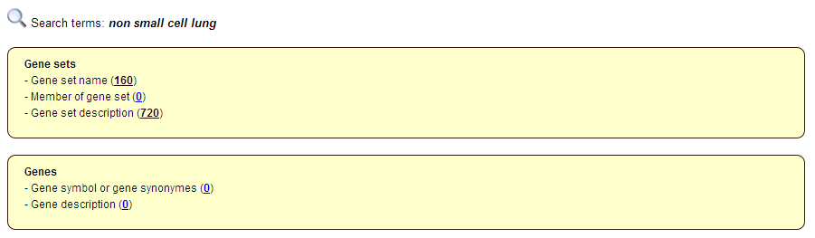
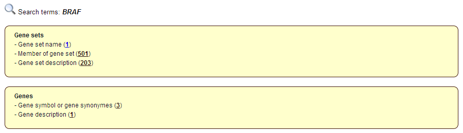
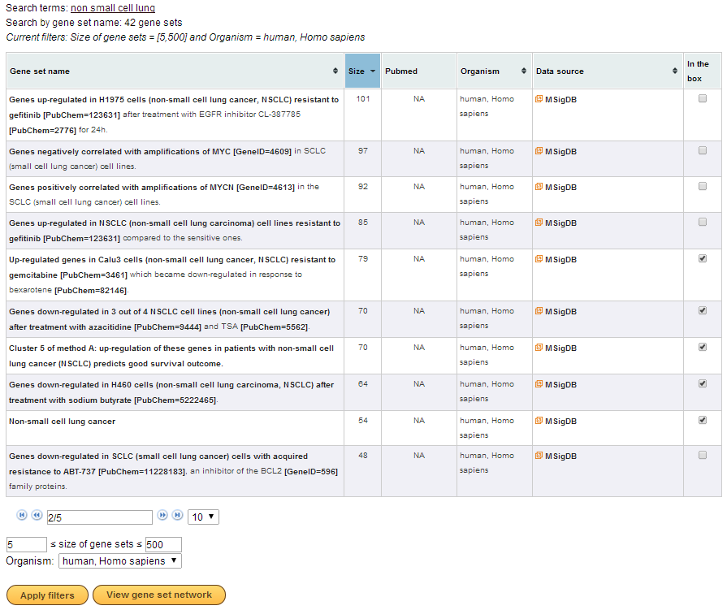
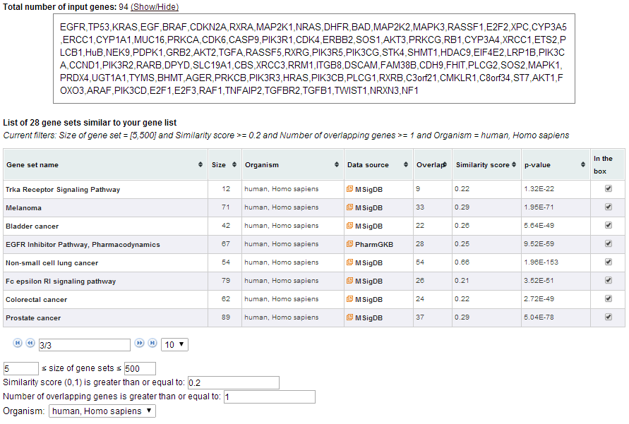
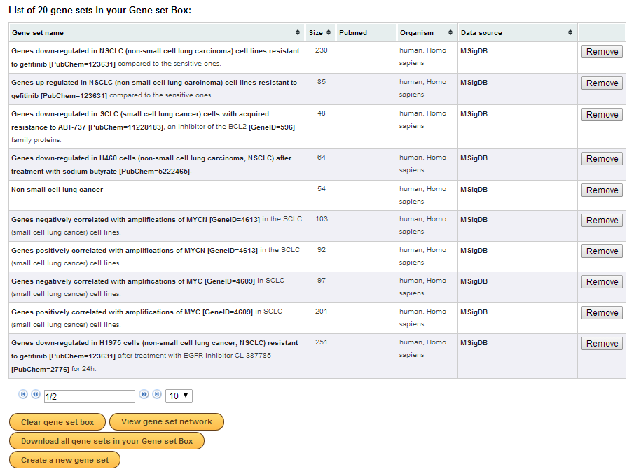
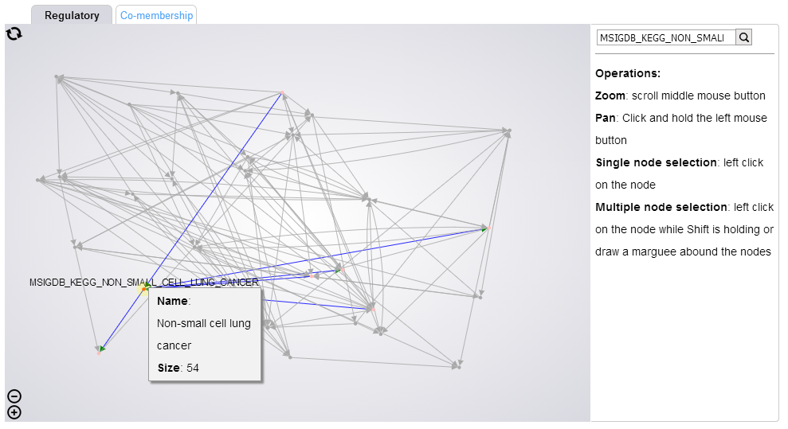
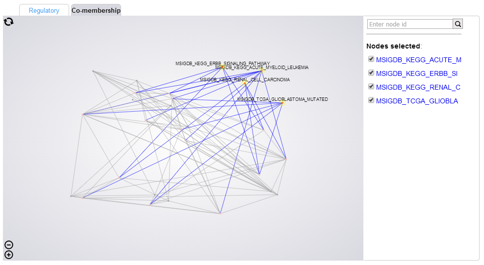
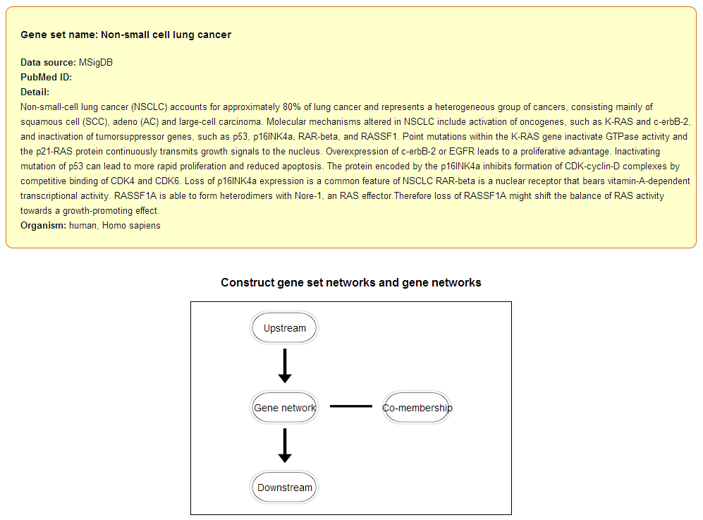
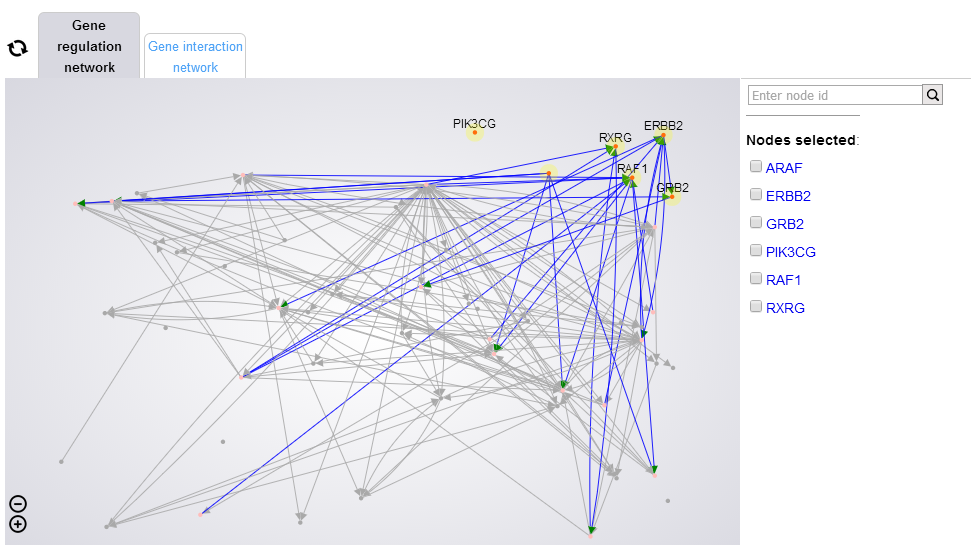

The PAG stands for the Pathway, Annotated-list and Gene-sigature, which is a group of genes that belong to the same pathway, share common biological processes, co-expression genes in a particular experiment belonging to the same disease, or any defination of the groups of the gene(e.g. drug targets, microRNA targets, protein family, isozyme and so on). The PAGs' network construction reveals higher level relationships among PAGs. The potential usage of the PAGs' network are exploration of the potential biological pathways in upstream and downstream involved in etiology of the disease, mining microRNA-biological processes, repostioning drugs based on the PAGs level and so on.
To construct PAGs' networks, users search for PAGs by using terms or a list of genes. Users add PAGs in which they are interested to PAG Box. PAGER can construct m-type PAGs' network and r-type PAGs' networks of PAGs in PAG Box.
1) A regulatory PAGs' network (r-PAGs' network). r-PAGs' networks connect a pair of PAGs when there is a significant number of gene regulations between the genes of the two PAGs. Gene regulation data were collected from different data sources in order to construct r-PAGs' network. Only high confident gene regulations were selected to use for constructing a r-PAGs' network.
2) Co-membership PAGs' networks (m-PAGs' networks) connect a pair of PAGs if there is a significant number of shared genes.
| Name | Position | Office | Age | Start date | Salary |
|---|---|---|---|---|---|
| Name | Position | Office | Age | Start date | Salary |
| Tiger Nixon | System Architect | Edinburgh | 61 | 2011/04/25 | $320,800 |
| Garrett Winters | Accountant | Tokyo | 63 | 2011/07/25 | $170,750 |
| Ashton Cox | Junior Technical Author | San Francisco | 66 | 2009/01/12 | $86,000 |
| Cedric Kelly | Senior Javascript Developer | Edinburgh | 22 | 2012/03/29 | $433,060 |
| Airi Satou | Accountant | Tokyo | 33 | 2008/11/28 | $162,700 |
| Brielle Williamson | Integration Specialist | New York | 61 | 2012/12/02 | $372,000 |
| Herrod Chandler | Sales Assistant | San Francisco | 59 | 2012/08/06 | $137,500 |
| Rhona Davidson | Integration Specialist | Tokyo | 55 | 2010/10/14 | $327,900 |
| Colleen Hurst | Javascript Developer | San Francisco | 39 | 2009/09/15 | $205,500 |
| Sonya Frost | Software Engineer | Edinburgh | 23 | 2008/12/13 | $103,600 |
| Donna Snider | Customer Support | New York | 27 | 2011/01/25 | $112,000 |
| Name | Position | Office | Age | Start date | Salary |
|---|---|---|---|---|---|
| Name | Position | Office | Age | Start date | Salary |
| Tiger Nixon | System Architect | Edinburgh | 61 | 2011/04/25 | $320,800 |
| Garrett Winters | Accountant | Tokyo | 63 | 2011/07/25 | $170,750 |
| Ashton Cox | Junior Technical Author | San Francisco | 66 | 2009/01/12 | $86,000 |
| Cedric Kelly | Senior Javascript Developer | Edinburgh | 22 | 2012/03/29 | $433,060 |
| Airi Satou | Accountant | Tokyo | 33 | 2008/11/28 | $162,700 |
| Brielle Williamson | Integration Specialist | New York | 61 | 2012/12/02 | $372,000 |
| Herrod Chandler | Sales Assistant | San Francisco | 59 | 2012/08/06 | $137,500 |
| Rhona Davidson | Integration Specialist | Tokyo | 55 | 2010/10/14 | $327,900 |
| Colleen Hurst | Javascript Developer | San Francisco | 39 | 2009/09/15 | $205,500 |
| Sonya Frost | Software Engineer | Edinburgh | 23 | 2008/12/13 | $103,600 |
| Donna Snider | Customer Support | New York | 27 | 2011/01/25 | $112,000 |
PAGER has several unique features which have not been provided before by other existing tools.
A temporary space for users to save PAGs. Users can construct 2 types of PAGs' networks, regulatory and co-membership PAGs' networks, of the PAGs in PAG Box. Users click on the PAG Box status (on the top of the page) to access their PAG Box.
A temporary space for users to save genes. Users can construct 2 types of gene networks, gene interaction and gene regulation networks, of the genes in Gene Box. Users click on the Gene Box status (on the top of the page) to access their Gene Box
PAGER was implemented by using PHP language version 5 and Codeigniter version 2.1.3. PAGER data was stored in Oracle 12g database maintained by Indiana University and was connected to PHP server by Oracle Instant Client software. P-value for each edge in PAGs' networks was computed on the fly by using hypergeometric function provided by PDL. For gene and PAGs' networks visualization in PAGER, cytoscape.js, a JavaScript graph library for network visualization.
Hypergeometric distribution was used for calculating a p-value of each edge in PAGs' networks
This section described different ways of using PAGER to study systems biology.
Users go to PAGER home page and enter searching terms such as a disease name or a gene symbol. For this use case, we entered “non small cell lung” to search for non-small cell lung cancer related PAGs. PAGER returned a list of results. The list contains genes and PAGs which relate to the searching terms in different aspects.
In this case, “non small cell lung” matched with names of 160 PAGs and descriptions of 720 PAGs. “non small cell lung” is not a name or a symbol of a gene, so PAGER returned 0 for a member of PAG line. However, if users entered “BRAF”, which is a gene symbol, PAGER returned 501 PAGs which contain BRAF gene.
The next step is clicking on the 160 PAGs which relate to “non small cell lung”. PAGER displayed a list of the 160 PAGs. The PAGs can be sorted by name, size, organism, or data source. We filtered only PAGs whose sizes is between 5 and 500 and are from humans. PAGs can be added to PAG Box for further analysis. Checkboxes in the left most column were checked if PAGs were already in the PAG Box.
On PAGER home page, users can enter a list of genes obtained from their experiment or other data sources in order to search for related PAGs. In this use case, a list of 94 non-small cell lung cancer genes were entered. PAGER displayed PAGs which related to the list of 94 genes and 28 PAGs were displayed after we applied filters.
PAGER counted the number of shared genes and calculated a significant value for each PAG. Users can click on a PAG name to see more detail about a PAG or add PAGs into PAG Box as in the previous use case.
the previous use case. Note that the significant value of each PAG was computed on-the-fly by using hypergeometric function provided by the additional PHP library. Therefore, it is possible that if the number of shared genes or the size of PAG is very high, the hypergeometric function cannot compute p-value because of number overflow.
Users can construct co-membership and regulatory PAGs' networks of their selected PAGs. For example, 20 PAGs were added into PAG Box.
On the PAG Box page, co-membership and regulatory PAGs' networks were constructed and displayed by clicking “View PAGs' network” button.
An instruction of using PAGs' network visualization was displayed on the right side. Users move a mouse over a PAG to see more detail about the PAG and see its neighbors, and click on an edge to see the detail of the edge. Users drag a mouse to cover PAG nodes for multiple selection. On the network page, users can also add or remove a PAG from PAG Box by clicking on a checkbox. Users select a PAG and click the link on the right hand side to see more detail about the PAG.
There are two taps for displaying a regulatory PAGs' network, a directed network, and a co-membership PAGs' network, an undirected network.
On a PAG detail page, users click on a diagram to construct expanded networks. The following example show a PAG detail page of a non small cell lung cancer PAG.
The expanded networks are networks of upstream, downstream, and co-membership PAGs. In this first version of PAGER, the expanded networks contain only top 20 PAGs.
In addition to the expanded PAG network, PAGER enables gene interaction and gene regulation network within a PAG. The following example show a gene regulatory network of a non small cell lung cancer PAG..
This use case showed how PAGER can be used to construct disease specific PAGs' networks. In this scenario, a list of disease related genes was not required. For example, we searched for non-small cell lung cancer related PAGs by using “non small cell lung”. The terms matched with the names of 160 PAGs. 5 sample human PAGs were added to PAG Box. On the PAG Box page, users create a new PAG by clicking on Create a new PAG button. PAGER displayed a list of gene and the number of PAGs which contain a particular gene. In this example, AKAP12 gene has the highest frequency suggesting that it is an important gene among the five PAGs in PAG Box. On this page, when users click on Use all genes to search by a list of genes, PAGER automatically generate a list of genes and fill in the text area in PAGER home page.